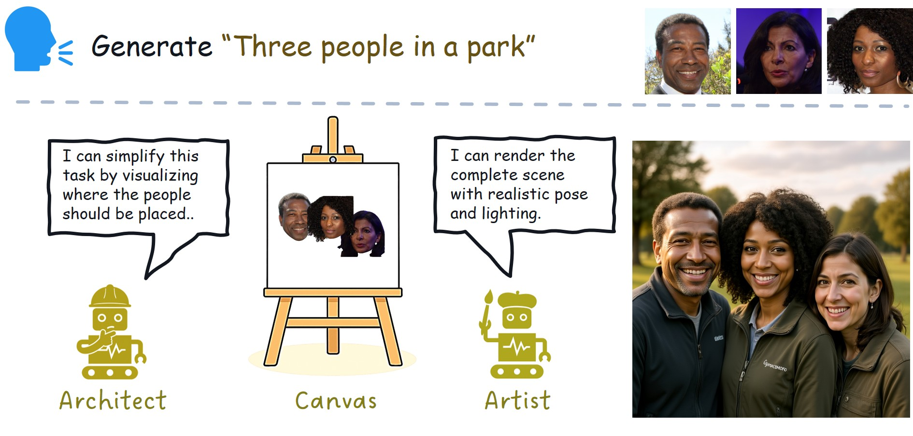
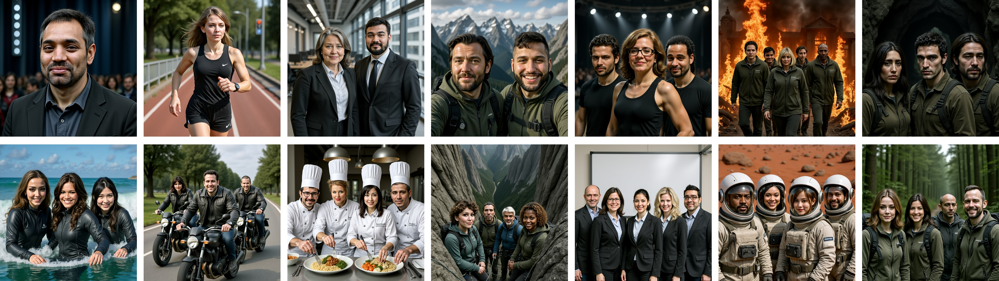
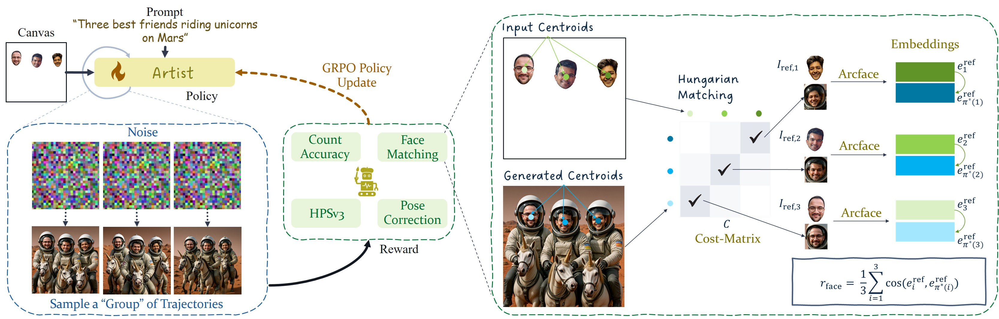
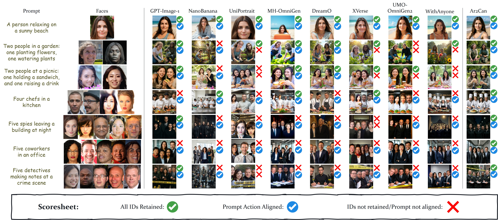
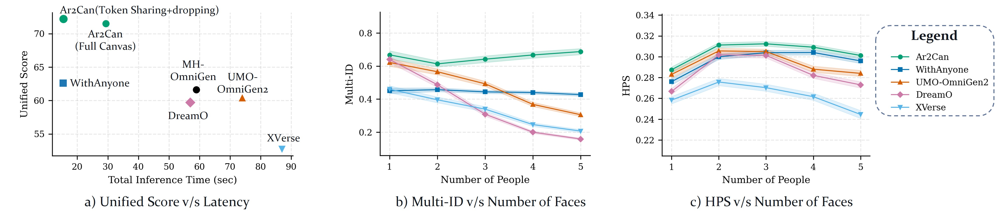

Qualcomm AI Research
Abstract
Despite recent advances in personalized image generation, existing models consistently fail to produce reliable multi-human scenes, often merging or losing facial identity. We present Ar2Can, a novel two-stage framework that disentangles spatial planning from identity rendering for multi-human generation. The Architect predicts structured layouts, specifying where each person should appear. The Artist then synthesizes photorealistic images, guided by a spatially-grounded face matching reward that combines Hungarian spatial alignment with identity similarity. This approach ensures faces are rendered at correct locations and faithfully preserve reference identities.
We develop two Architect variants, seamlessly integrated with our diffusion-based Artist model. This is optimized via Group Relative Policy Optimization (GRPO) using compositional rewards for count accuracy, image quality, and identity matching. Evaluated on the MultiHuman-Testbench, Ar2Can achieves substantial improvements in both count accuracy and identity preservation, while maintaining high perceptual quality. Notably, our method achieves these results using primarily synthetic data, without requiring real multi-human images.
Framework
Ar2Can decomposes multi-human generation into two stages. The Architect first generates a structured spatial plan — bounding boxes (and optionally pose) specifying where and how each person should appear. The Artist then renders the photorealistic image conditioned on this spatial plan, reference identities, and the text prompt. This explicit decomposition eliminates the identity merging and swapping failures that plague single-stage methods.

Fig 1. Ar2Can Framework Overview. Our two-stage approach decomposes multi-human generation into spatial planning (Architect) and identity-preserving rendering (Artist). The Architect first visualizes where each person should be placed; the Artist then renders the complete scene with realistic pose and lighting.

Fig 2. Ar2Can generates highly photorealistic multi-human scenes with 1–5 people while preserving individual identities. Our two-stage architecture produces natural poses, realistic lighting, and proper spatial arrangements without identity merging or blending artifacts.
Method
The Architect generates facial bounding boxes and/or pose from textual descriptions, focusing on accurate instance counts and spatially plausible placements. We design two complementary variants with different efficiency trade-offs:
Built on Qwen-2.5 (0.5B), extended with special layout tokens
<SoL>, <EoL>, <C> and dual prediction
heads for continuous coordinate regression alongside standard token generation.
Fine-tunes Flux-Schnell via GRPO with count accuracy and HPSv3 rewards, leveraging the model's 2D spatial priors to synthesize layout sketches from which bounding boxes and human pose coordinates are extracted.
The Artist — Flux-Kontext fine-tuned via GRPO — renders photorealistic multi-human images conditioned on the Architect's layout, reference identity images, and the text prompt. Rather than supervised fine-tuning (which requires expensive paired annotations), we use RL to directly optimise non-differentiable objectives via a four-component compositional reward.
A key innovation is the spatially-grounded face matching reward: Hungarian algorithm matching first establishes spatial correspondence between Architect-predicted centroids and detected face locations, then ArcFace identity similarity is computed only between spatially-matched pairs. This prevents copy-paste artifacts while jointly optimising location accuracy and identity preservation. Token dropping (2× speedup) and shared RoPE encodings for overlapping regions further improve efficiency and occlusion handling.
Binary reward: generated face count must exactly match the target count in the prompt.
Normalised human preference score ensuring prompt alignment and preventing visual artifacts.
Hungarian centroid matching + ArcFace similarity. Jointly optimises spatial location and identity.
Frontality score from facial landmarks suppresses copy-paste artifacts and encourages natural poses.

Fig 3. Artist training pipeline with GRPO. Given the input canvas and text prompt, the model samples a group of images and optimises over four compositional rewards: count accuracy, prompt alignment / aesthetic quality (HPSv3), spatially-grounded face matching, and pose correction. Hungarian centroid matching (right) establishes flexible spatial correspondence before computing ArcFace identity similarity.
Results
Ar2Can substantially outperforms both proprietary systems (GPT-Image-1, Nanobanana) and open-source methods on identity preservation and count accuracy, while maintaining competitive perceptual quality and action alignment.

Fig 4. Qualitative comparison with state-of-the-art methods. Left: reference images and text prompts from MultiHuman-Testbench. Right: outputs from all methods. Scorecards indicate ID preservation and prompt alignment. Existing methods frequently fail at one or both objectives, while Ar2Can consistently achieves both across diverse multi-human scenes.
Quantitative Analysis
Ar2Can maintains consistent identity preservation and prompt alignment as person count scales from 1 to 5, with a strongly favourable latency–quality trade-off.

Fig 5. Quantitative analysis and scalability. (a) Latency–quality trade-off on A100 GPU. (b) Multi-ID similarity vs. person count. (c) HPS vs. person count. Ar2Can maintains consistent identity preservation and prompt alignment across 1–5 people, with token sharing/dropping providing a further 2× speedup.
Citation
If you find Ar2Can useful in your research, please cite our paper:
@article{borse2025ar2can,
title={Ar2Can: An Architect and an Artist Leveraging a Canvas for Multi-Human Generation},
author={Borse, Shubhankar and Pham, Phuc and Farhadzadeh, Farzad and Choi, Seokeon
and Nguyen, Phong Ha and Tran, Anh Tuan and Yun, Sungrack
and Hayat, Munawar and Porikli, Fatih},
journal={arXiv preprint arXiv:2511.22690},
year={2025}
}